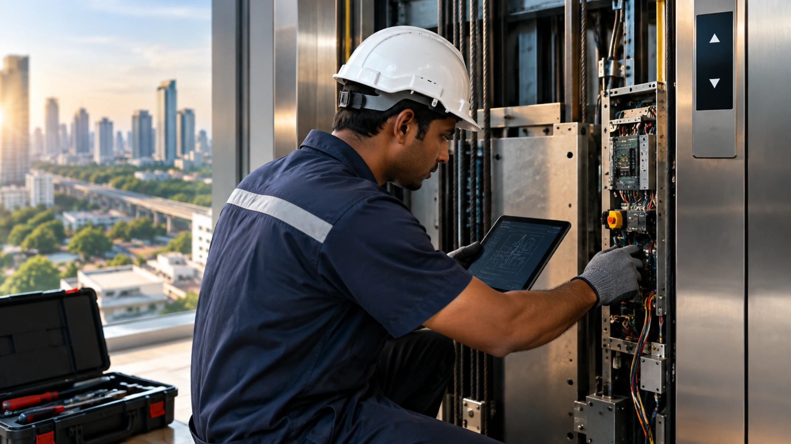

"The lift is not working" is how many breakdown calls begin, but it gives a technician very little useful information. BG Elevators understands that accurate fault details can make diagnosis faster, while BG Elevators can use information such as the floor, timing, symptoms, display codes, and recent building changes to prepare for the visit. A clear report can help technicians identify likely causes, carry suitable spare parts, and reduce unnecessary repeat visits. You do not need technical knowledge to report a problem properly; you simply need to record what happened while the fault is fresh.
Alt text: Elevator technician inspecting a control panel during repair.

Why the First Phone Call Decides the Repair Time
Elevators fail in patterns. A door that reopens repeatedly points somewhere very different from a car that stops between floors. When a technician knows the pattern before travelling, he can carry the likely spares, which matters in a city where crossing from Whitefield to Rajajinagar in the evening eats two hours.
Without that, the first visit becomes a diagnostic trip and the repair happens on the second. Two visits instead of one is the biggest avoidable cost in lift downtime, and any elevator repair service in Bangalore will confirm it usually traces back to a vague initial report.
What an Elevator Repair Service in Bangalore Asks First
Expect these questions, and have the answers ready. A competent elevator repair service in Bangalore will run through them in a fixed order because each one narrows the fault.
- What exactly happens, in plain words, when someone presses the call button?
- Which floor or floors does it happen on, or is it every floor?
- Is it constant, or intermittent? If intermittent, at what time of day?
- Did anything change recently: power work, a new DG set, plumbing leak, painting in the shaft?
- Is anyone trapped in the car right now?
- What does the display or controller show, if anything?
That last question is the one buildings most often can't answer, and it's the most valuable.
Describing the Fault Properly
Sounds and movement
Vague words cost time. "Making a noise" could mean a dozen things. Say whether it's a rhythmic clicking that matches car speed, a grinding on start-up only, a squeal near one particular floor, or a thud when the doors close. Note whether the noise happens when the car is empty or loaded, and whether it changes going up versus going down.
Movement matters just as much. Does the car overshoot the landing by 20 mm? Does it creep after stopping? Does it start smoothly and then jerk once mid-travel? Each of these points to a different subsystem, and describing it accurately is the beginning of real elevator troubleshooting.
Patterns over time
Intermittent faults are the hardest to catch. If your lift misbehaves only between 7 and 9 in the morning, that's a loading or supply-voltage clue. If it fails during heavy rain, water in the pit or a damp landing door contact is the obvious suspect. If it started the week the building switched to a new DG set, phase sequence or voltage stability is worth checking first.
Ask the watchman to write down date, time, floor and symptom on a sheet kept near the lift lobby. A fortnight of that log is worth more than an hour of guessing.
The Details That Speed Up Elevator Fault Diagnosis
|
Information |
Why it matters |
|
Controller error code or fault display |
Points straight to the failed circuit or safety device |
|
Floor where the fault occurs |
Isolates a landing door lock, cam or levelling sensor |
|
Time of day and weather |
Separates load, supply and moisture-related faults |
|
Recent electrical or civil work |
Explains sudden onset faults |
|
Photo of the controller display |
Removes transcription errors |
|
Whether the safety circuit LED is lit |
Distinguishes a safety trip from a drive fault |
|
Number of people in the car when it failed |
Flags overload or brake slip issues |
|
Last AMC visit date and what was done |
Avoids repeating recent checks |
Precise elevator fault diagnosis follows from precise observation. Nothing on that list requires training, only the discipline to record it while the problem is fresh.
Photos, Codes and Logs Beat Descriptions
Modern controllers store fault history. A technician can pull that log, but you can speed things up by photographing the display the moment the lift stops. Codes vary between manufacturers, so don't try to interpret them. Just capture them.
Photograph three things: the controller display, the car operating panel showing which indicators are lit, and the position of the car relative to the landing if it has stopped out of level. Send them with the complaint rather than describing them over the phone. Good elevator repair Bangalore teams increasingly work from photographs shared on messaging apps before the engineer leaves the workshop, and a well-run elevator repair service in Bangalore will ask for them by default.
Keep the AMC logbook current. If a rope tension check or brake adjustment was done three weeks ago, that context changes where a technician looks first.
Common Lift Breakdown Symptoms and What They Usually Suggest
These are starting points, not conclusions, and a qualified elevator repair Bangalore engineer must confirm the cause before any work begins.
- Doors open and close repeatedly without the car moving: usually a door lock, safety edge or infrared curtain fault, sometimes just an obstruction in the sill track.
- Car runs but won't level correctly: levelling sensor, magnet position or brake wear.
- Lift works on some floors only: landing call button, wiring at that landing, or a door contact on that floor.
- Car stops mid-travel and resets: a safety circuit trip, often overspeed governor, pit switch or a loose safety chain connection.
- Everything dead, no lights: supply, phase failure relay, or main switch tripped.
- Unusual smell or hot machine room: stop using the lift and call immediately.
A recurring lift breakdown that gets reset without a root-cause fix nearly always returns, usually at a worse moment.
Preparing Your Building for a Faster Elevator Repair Service in Bangalore
Access and keys
Half the delay on site is administrative. Machine room locked, key with a resident who's at work. Shaft lighting dead. No permission to shut the lift down during office hours. Nominate one person per building who holds keys and can authorise a shutdown, and share that name with your lift repair service in advance.
Records and rescue readiness
Keep the licence, wiring diagram, AMC contract and previous reports in one folder in the machine room, and hand a copy to whichever lift repair service attends. Train two staff members on manual rescue, because trapped-passenger release cannot wait for a technician crossing the city. Post the emergency number inside the car and at the ground landing where people can actually read it.
Frequently Asked Questions
What should I do first when someone is trapped in a lift?
Talk to them, keep them calm, and confirm nobody tries to force the doors. Call your maintenance team and mention clearly that passengers are inside, since that changes the response priority. Only trained staff should perform manual rescue. Never attempt to pull the car up with the doors open.
How quickly should a technician reach a stalled lift?
For a trapped-passenger call, expect a response measured in tens of minutes rather than hours, depending on traffic and distance. Non-emergency faults typically get attended the same or next working day. Ask your elevator repair service in Bangalore for written response times in the AMC rather than relying on assurances.
Do error codes mean the same thing on every lift?
No. Each manufacturer uses its own numbering, and the same code can mean different things across controller generations. Photograph the display and pass the exact characters on, including any letters. Guessing at a meaning found online often sends elevator troubleshooting in the wrong direction entirely.
Can we reset a tripped lift ourselves?
Only if your service provider has trained a specific person and shown them which reset is safe. Repeatedly resetting a lift that keeps tripping masks a genuine safety fault. If the same trip recurs within a day, stop resetting it and get the fault investigated properly.
Conclusion
Faster elevator repairs are not always about sending a technician sooner; they are often about providing better information before the technician arrives. Record the symptoms, floor, time, controller display, recent building changes, and previous maintenance work. Keep service records accessible and ensure authorized personnel can provide machine-room access. This information can make BG Elevators better prepared to investigate the issue, while BG Elevators can help building owners identify appropriate repair, maintenance, and modernization solutions based on the elevator's condition.
Need professional help with a recurring elevator problem? Contact BG Elevators today to discuss your elevator repair requirements and get the right service support for your building.
Follow us on Instagram for elevator solutions, projects, maintenance insights, and the latest updates.